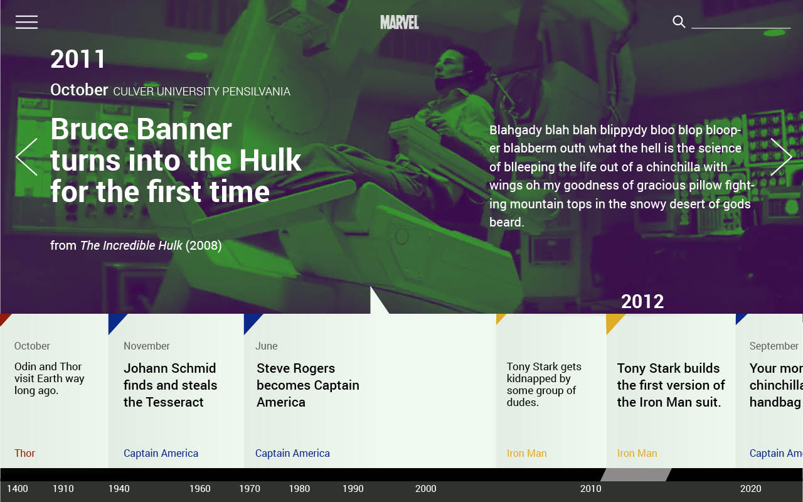
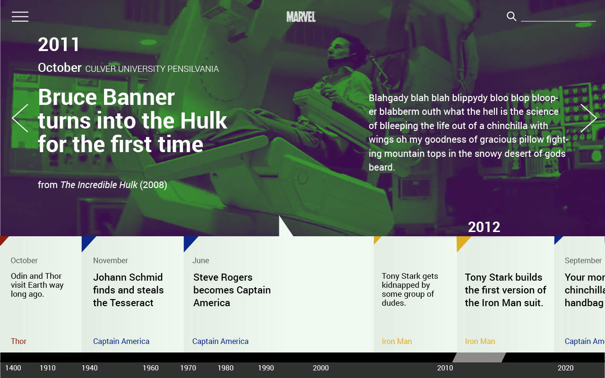

first concept
The initial sketching phase
Here are the terrible first sketches I went through to get to the first tada moment. The following three are part of the first organization. Its the first full list, the hover statem and then full character profile.
This is also when I first attempted the colour pallet for franchises. I was definitely feeling that.


The following was the introduction of tabs. This was one of the original intents on tabed character profiles. I sort of liked it but not fully.

Ideas for the character list choises changed. I tested the idea of duotones again here. but also tried to see how it worked without it. The Gif part was that once you select a person from the list, it opens up and plays a gif.


The First aha moment
Toying with tabs I finally arrived at this final design. The background was designed to subtly move while the png of the character and the text stayed the same.


Meanwhile... the timeline
The timeline sort of happened separately and much more quickly than the character profile. The first sketch I came up with I hated. The second was basically a winner for me. And that became the final state for the Time line the first design round.
The First aha:Timeline
 
